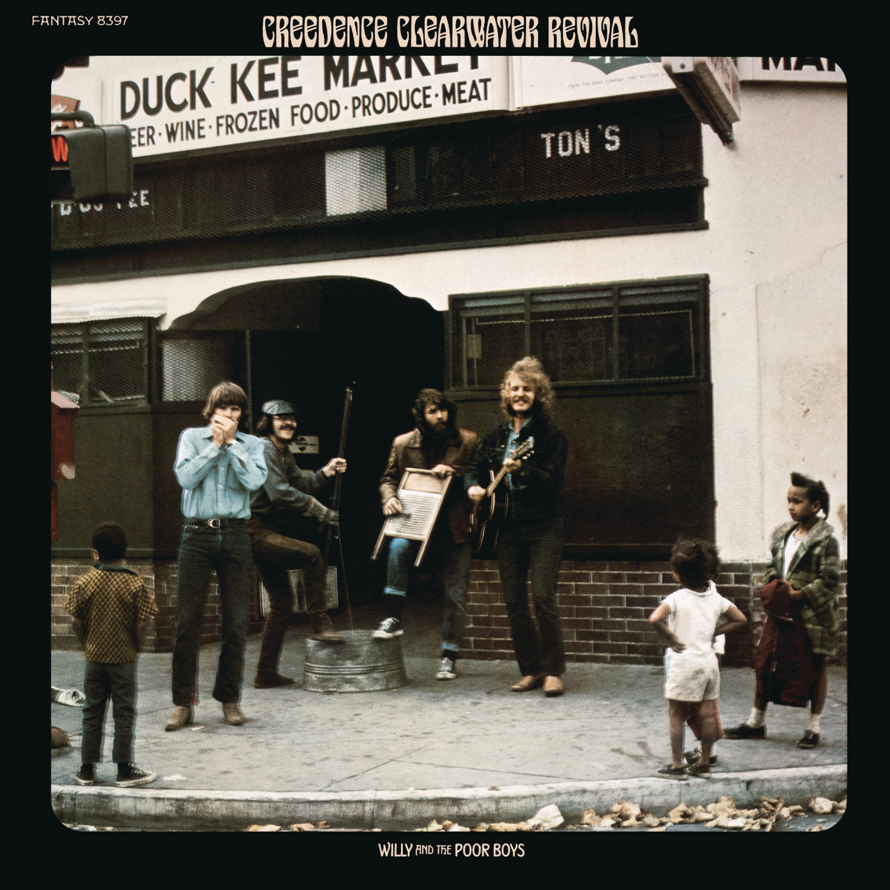

Day 3

Creedence Clearwater Rivival ◆ Fortunate Son ◆ Willy and the Poor Boys ◆ 1969
一首标志性的60年代摇滚，每次听到我都会想到阿甘正传……说起来，第一次听到好像就是在阿甘正传里，这首是在阿甘到越南的时候，还有 Sweet Home Alabama 是在阿甘跑步横穿美国的时候。
引用维基百科里对作者 John Fogerty 的引用：
It’s the old saying about rich men making war and poor men having to fight them.
The thoughts behind this song—it was a lot of anger. So it was the Vietnam War going on… Now I was drafted and they’re making me fight, and no one has actually defined why. So this was all boiling inside of me and I sat down on the edge of my bed and out came “It ain’t me, it ain’t me, I ain’t no senator's son!” You know, it took about 20 minutes to write the song.
（豆知识：John Fogerty 没真的去越南）
Some folks are born made to wave the flag
Ooh, they’re red, white and blue
And when the band plays “Hail to the chief”
Ooh, they point the cannon at you, Lord
It ain’t me, it ain’t me, I ain’t no senator’s son, son
It ain’t me, it ain’t me, I ain’t no fortunate one, no
Some folks are born silver spoon in hand
Lord, don't they help themselves, oh
But when the taxman comes to the door
Lord, the house looks like a rummage sale, yes
It ain’t me, it ain’t me, I ain’t no millionaire’s son, no
It ain’t me, it ain’t me, I ain’t no fortunate one, no
Some folks inherit star spangled eyes
Ooh, they send you down to war, Lord
And when you ask them, “How much should we give?”
Ooh, they only answer “More! More! More!” y’all
It ain’t me, it ain’t me, I ain’t no military son, son
It ain’t me, it ain’t me, I ain’t no fortunate one, one
It ain’t me, it ain’t me, I ain’t no fortunate one, no no no
It ain’t me, it ain’t me, I ain’t no fortunate son, no no
no